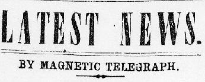

|
The first two columns of page 5 were devoted mostly to local news,especially
to public meetings and accidents involving individuals from Franklin County. As with
the Vindicator and the Spectator in Virginia, the two Pennsylvania
newspapers overlapped a great deal in their coverage of local news. Items of a
religious nature seemed to draw special attention, with both papers on February 1,
1860, for example, carrying coverage of a local appearance and speech by Rev. Dr.
Peter Cartwright at the Methodist Church, and reporting on local citizens appointed to
church offices by the state conference of the United Brethren of Christ. Also, it was
in coverage of local events that the two papers revealed the communal ties they
shared. While politically the editors feuded, and each paper wrote of the other's
political positions with contempt, the editors nevertheless lived in the same town,
shared the same friends, and engaged in the same familial, commercial and religious
networks. Political conflict seems to have been somewhat disconnected from personal
interaction at the social level. See, for example, the amiable
coverage each paper gave on February 1, 1860 to the marriage of George Mengel,
junior partner of the Valley Spirit.

The remainder of page 5 was devoted almost entirely to news and advertisements
related to commercial and financial concerns. Columns 3 and 4 usually carried, under
the large heading "Latest News," items received by the Repository and
Transcript via telegraph. Perhaps suggesting just what news had to be reported
immediately, this section of the paper mostly printed current rates of exchange at the
New York and Philadelphia markets for agricultural commodities. Prices at Chambersburg
markets usually followed the "Latest News," but under the separate heading of "Report of the Markets."
Columns 5 and 6 carried advertisements, primarily regarding estate sales and
public auctions.
|